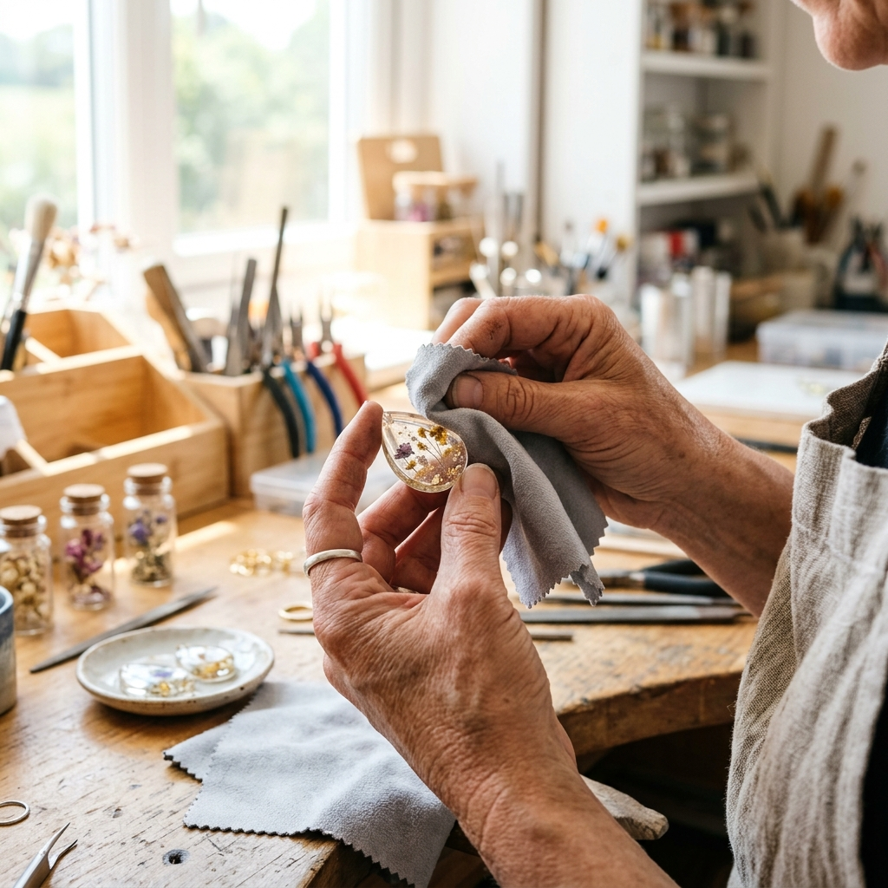

Services We Offer
Choose from our specialized resin casting services, tailored to your custom flowers.

Bridal Bouquet Preservation
Don't let your wedding flowers fade! Ship us your bouquet fresh after the ceremony. We dehydrate the blossoms using specialized techniques and cast them in custom matching items such as pendants, heavy paperweights, and ring cones.

Memorial Flower Curing
A respectful way to carry memories of special family occasions, celebrations, or honoring a loved one. We cast petals, ashes, or small relics into durable sterling silver cufflinks, charm beads, and delicate heart-shaped keepsakes.

Botanica Wall Frames & Coasters
Bring the tranquility of the garden indoors. We arrange pressed foliage, ferns, and seasonal wildflowers inside wooden frames with a translucent glass finish, as well as circular heat-resistant coasters embedded with real botanicals.

Private Group Bookings
Celebrate a bridal shower, birthday, or creative team builder in our Sage Green studio. We provide all flower pressing templates, resin liquids, bezels, and safety materials. Every participant casts and finishes 2 custom ornaments.